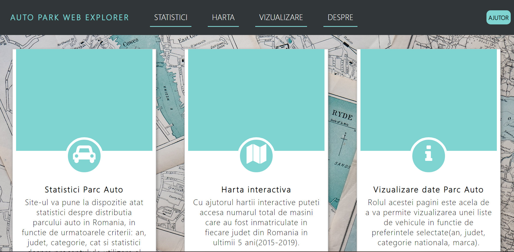
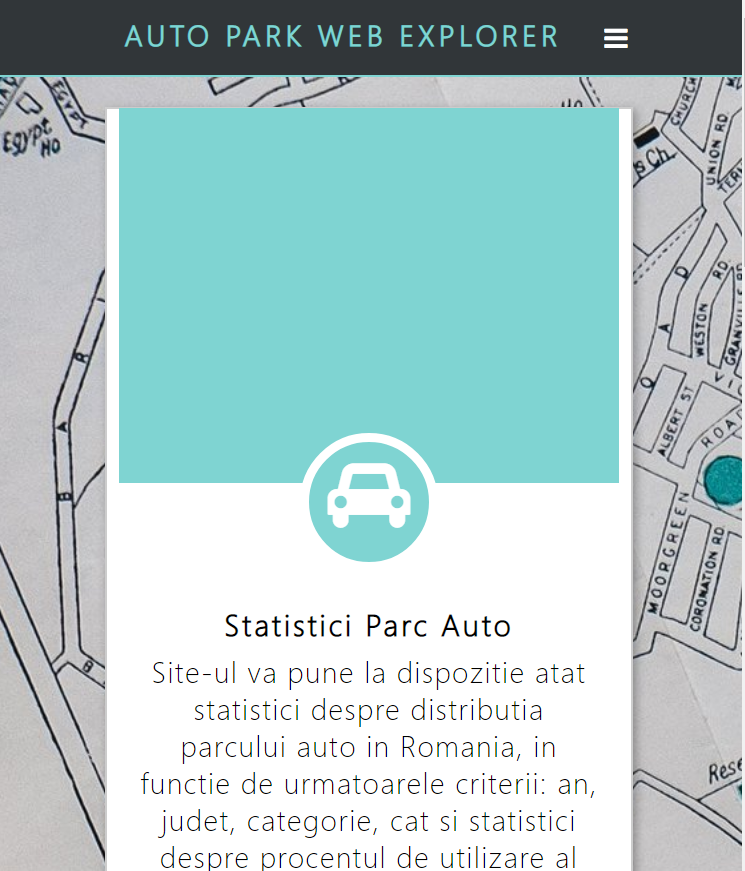
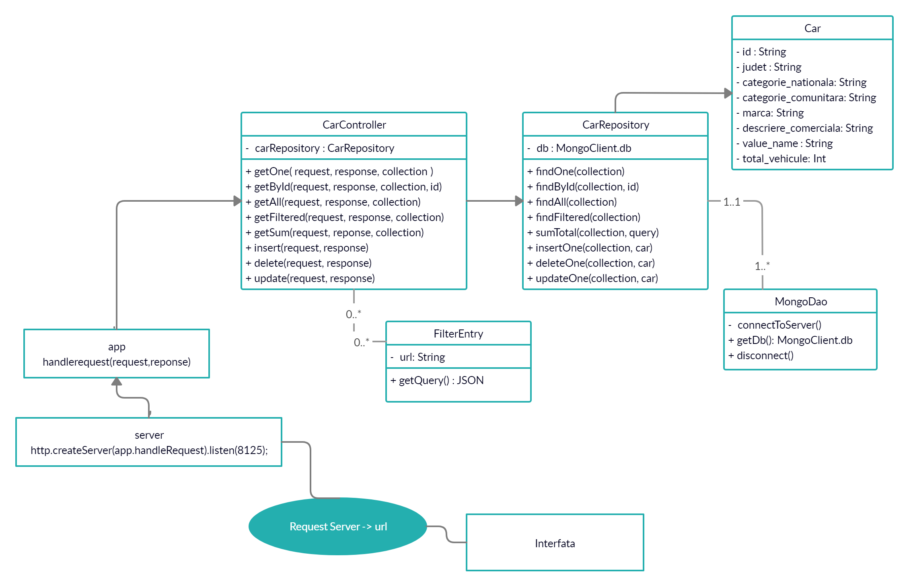

APAX (Auto Park Web Explorer) este o aplicatie web dedicata gestionarii datelor publice ale parcului auto din Romania pe ultimii 5 ani
Datele disponibile pot fi vizualizate in functie de preferintele utilizatorului sau pot fi folosite pentru a genera anumite statistici si ulterior exportate.
De asemenea, harta interactiva permite accesarea unor informatii in functie de judetul selectat.
Interfata aplicatiei a fost creata astfel incat navigarea sa fie una usoara si eficienta, dar si placuta vizual
Din punct de vedere cromatic, au fost folosite nonculorile: alb, negru si combinatia acestora: gri in special la text pentru claritate, dar si nuante ale culorilor: "cyan"-"turcoaz". Acestea din urma au fost alese deoarece reprezinta un amestec de verde si albastru, iar in cadrul unei harti verdele si albastrul sunt culorile predominante ale unei harti(verde-pamant, albastru-apa) si sunt folosite pentru evidentierea unor elemente
Din punct de vedre structural, aplicatia a fost impartita in 4 pagini principale(index/acasa, statistici, vizualizare si despre) ce au nume sugestive si sunt independente pentru a usura procesul de navigare si 2 auxiliare(ajutor, administrare). Astfel, pagina principala este una introductiva care sa il familiarizeze pe utilizator asupra continutului si scopului site-ului, pagina 'Statistici' se ocupa de generarea unor statistici, pagina 'Vizualizare' construieste un tabel cu datele dorite ce poate fi exportat, iar pagina despre ofera informatii dar si servicii de contact, administrare. De asemenea, daca utilizatorul intampina probleme poate accesa pagina 'Ajutor' pentru gasi raspunsul la o anumita problema intampinata.
Cateva scenarii de utilizare ale aplicatiei ar fi:
1. Utilizatorul viziteaza pagina "Statistici", selecteaza anumite filtre si apasa butonul de generare. Statistica rezultata poate fi exportata intr-un format ales de acesta.
2. Utilizatorul viziteaza pagina "Vizualizare", selecteaza anumite filtre si apasa butonul de generare. Tabelul poate fi exportata intr-un format ales de acesta.
3. Utilizatorul viziteaza pagina "Harta", unde va accesa o vizualizare cartografica a Romaniei. La apasarea pe o resedinta de judet din Romania, acesta va obtine cateva date pentru acel judet.
4.Utilizatorul viziteaza pagina "Contact". Cateva din actiunile pe care le poate face sunt: trimiterea unui mesaj prin formularul de contact, accesarea documentatiei aplicatiei sau a paginii de administrator daca detine parola corespunzatoare.
5.Utilizatorul viziteaza pagina "Ajutor", unde va putea afla raspunsurile la anumite intrebari.
Fiecare pagina a site-ului este responsiva, astfel incat aplicatia sa aiba un aspect placut pe diferite rezolutii. In continuare puteti gasi cateva exemple de imagini in care sunt comparate interfetele pentru un desktop PC respectiv un telefon mobil.
 Alegerea proiectului s-a facut pe baza dorintei de a invata mai mult(fiind un proiect din categoria M), dar si a problemei pe care o rezolva aplicatia ceruta: facilitarea accesarii unor date publice intr-un mod cat mai simplu
Prima parte a proiectului a constat in informare, documentare si acomodare cu tehnologiile necesare
Lipsa experientei in folosirea nodejs si javascript a fost o problema pe parcursul implementarii proiectului, cum ar fi: agregarea in mongoDB, folosirea fetch pentru a face un apel la server, variabile 'undefined' si altele. De acceea, progresul a stagnat in anumite etape ale proiectului, , dar pe care am reusit sa le rezolvam, De acceea, progresul a stagnat in anumite etape ale proiectului, , dar am reusit sa depasim aceste probleme, astfel incat progresul s-a marit spre final.
Desi s-ar putea aduce multe imbunatatiri proiectului, suntem multumiti de rezultatul final, datorita faptului ca cerintele principale ale proiectului au fost respectate dar si a experientei capatate.
Partea de server a aplicatiei a fost conceputa cu ajutorul Node.js, iar stocarea şi managementul datelor s-a facut recurgându-se la servere de baze de date aliniate paradigmei NoSQL: MongoDB
Partea de client/interfata foloseste html pentru marcare, css pentru stilizare si javascript pentru functionalitatea site-ului dar si pentru realizarea de apeluri la API-ul creat. Apelurile la API se fac prin fetch care returneaza un obiect "Promise" care rezolvă răspunsul la solicitarea respectivă, indiferent dacă are succes sau nu.
Din punct de vedere arhitectural, aplicatia recurge la MVC(Model-View-Controller): modelul gestionează direct datele, view-ului îi corespunde reprezentarea grafica, rolul său este de a evidenția informația obținută până ce ea ajunge la controlor, iar controlerul este legatura dintre utilizator si sistem, preia un anumit input/request de la utilizator pentru a-i oferi informatiile cu ajutorul view-ului.
Urmatoarea imagine reprezinta arhitectura de baza a aplicatiei:
Proiectul foloseste un API(Application programming interface) REST(representational state transfer) pentru oferirea unor servicii.
Rezultatul unei procesări conduce la obținerea unei reprezentări a unei resurse. Clientul interacționează cu reprezentările resurselor via verbe: GET, POST, PUT, DELETE
In cazul de fata, GET preia un obiect masina sau o lista de masini in format JSON in functie de url. POST este folosit pentru a insera o noua resursa, PUT este folosit pentru a actualiza o resursa existenta(pe baza id-ului trimis), iar DELETE face stergerea unei resurse(pe baza id-ului).
Atributii Mariciuc Cecilia: server, client: functionalitate pentru pagina de statistici, vizualizare si administrator, baza de date, documentatie
Atributii Mariciuc Ovidiu: planuire design, design interfata(fara statistici si vizualizare), functionalitate pagina de contact si harta, ajutor baza de date, documentatie